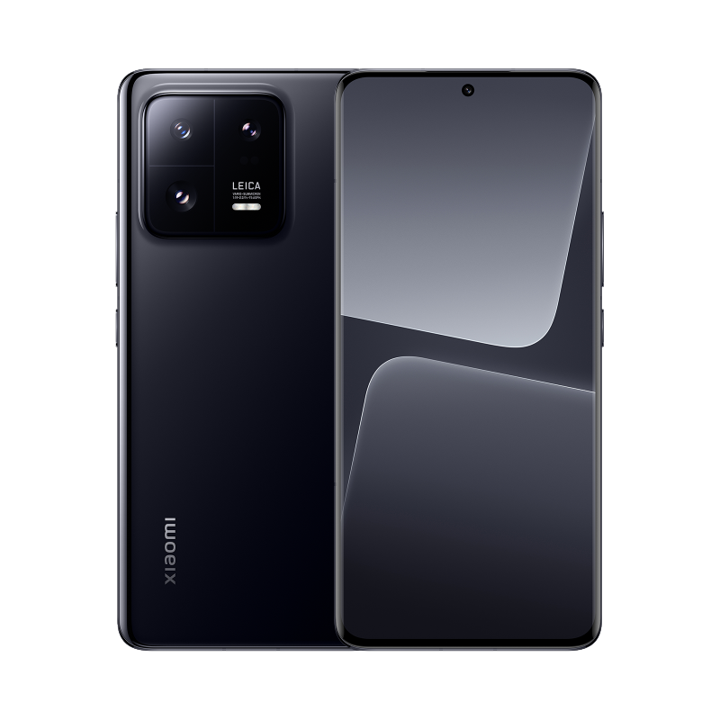

iPhone 14 Pro Max

- Pantalla:El Xiaomi 13 Pro cuenta con una pantalla AMOLED de 6.55
pulgadas con una resolución de 2400 x 1080 píxeles. Además, cuenta
con una alta tasa de refresco de hasta 120 Hz, lo que proporciona una
experiencia de visualización suave y fluida
- Cámara:El Xiaomi 13 Pro cuenta con un sistema de cámara trasera triple
con una cámara principal de alta resolución, una cámara ultra gran angular
y una cámara telefoto. También cuenta con funciones avanzadas de
fotografía y video, como zoom óptico, estabilización de imagen y modo
noche mejorado.
- Conectividad:El Xiaomi 13 Pro cuenta con conectividad 5G, lo que permite
una conexión rápida y estable a redes de datos móviles de última
generación. También cuenta con opciones de conectividad como Wi-Fi 6,
Bluetooth 5.2 y NFC.
- Almacenamiento:El Xiaomi 13 Pro ofrece una amplia capacidad de almacenamiento
interno para almacenar una gran cantidad de archivos, aplicaciones, fotos
y videos. Puede venir en diferentes capacidades de almacenamiento, como
256 GB o 512 GB, lo que permite a los usuarios tener suficiente espacio
para sus necesidades de almacenamiento.
- Batería:Este dispositivo cuenta con una batería de alta capacidad que
permite una larga duración de la batería. Además, cuenta con tecnología
de carga rápida, lo que permite cargar el dispositivo de manera rápida y
eficiente.
Volver